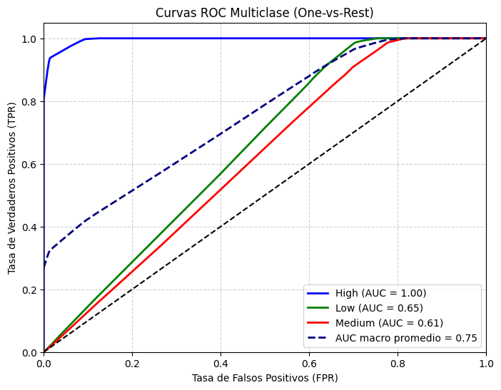
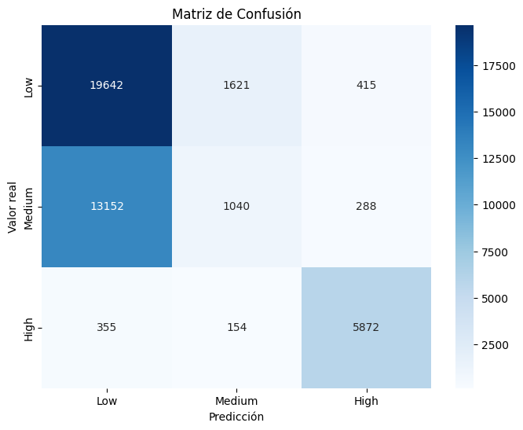
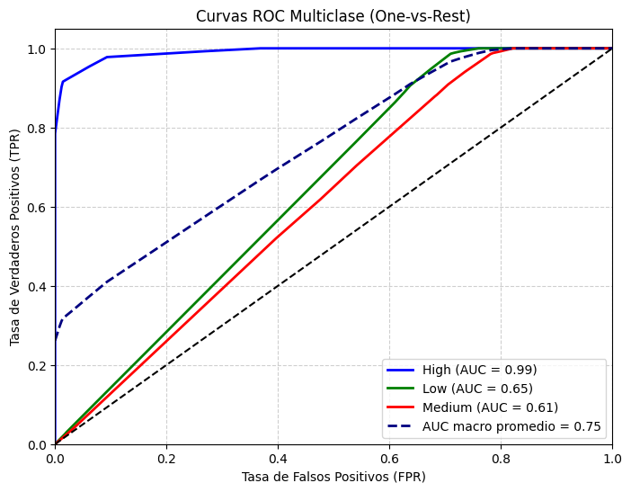
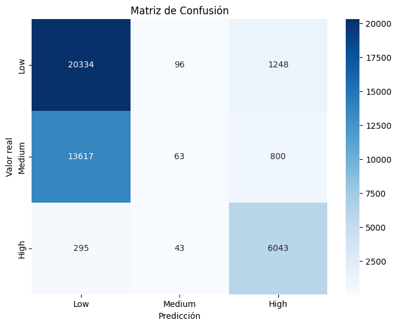
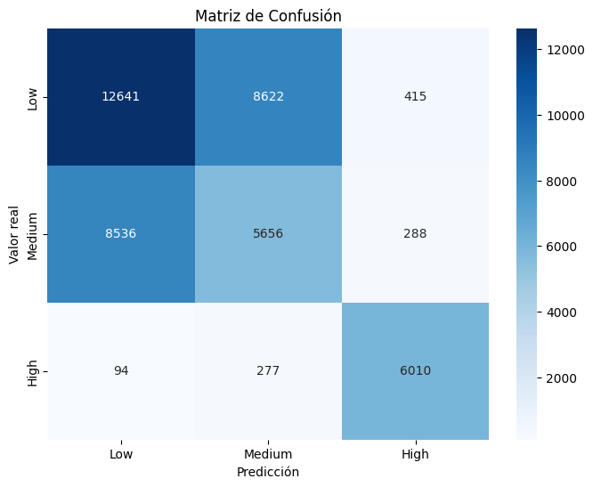

Arbol de decision#
Importaciones#
import time
import pandas as pd
import warnings
warnings.filterwarnings('ignore')
from sklearn.preprocessing import OneHotEncoder, StandardScaler, label_binarize
from sklearn.compose import ColumnTransformer
from sklearn.pipeline import Pipeline
from sklearn.metrics import (
accuracy_score, precision_score, recall_score, f1_score,
roc_auc_score, confusion_matrix, classification_report,
roc_curve, auc
)
from sklearn.tree import DecisionTreeClassifier
from sklearn.model_selection import train_test_split, GridSearchCV,StratifiedKFold
from imblearn.over_sampling import SMOTE, ADASYN
from imblearn.pipeline import Pipeline as ImbPipeline
Cargado de datos#
X_train = pd.read_csv('data/X_train.csv')
y_train = pd.read_csv('data/y_train.csv')
X_test = pd.read_csv('data/X_test.csv')
y_test = pd.read_csv('data/y_test.csv')
X_train.shape, X_test.shape, y_train.shape, y_test.shape
((170152, 15), (42539, 15), (170152, 1), (42539, 1))
y_train = y_train.squeeze()
y_test = y_test.squeeze()
Funciones usadas#
from funciones import *
Modelo DecisionTree#
pipe_DT=crear_pipeline(DecisionTreeClassifier(random_state=0,max_depth=5,min_samples_leaf=3), tipo="normal")
start=time.time()
model_DT=pipe_DT.fit(X_train,y_train)
end = time.time()
print(f"Tiempo de ejecución: {(end - start)/60:.2f} minutos")
Tiempo de ejecución: 0.05 minutos
evaluar_modelo(model_DT,X_test,y_test)
Classification Report:
precision recall f1-score support
Low 0.59 0.99 0.74 21678
Medium 0.00 0.00 0.00 14480
High 0.92 0.94 0.93 6381
accuracy 0.64 42539
macro avg 0.50 0.64 0.56 42539
weighted avg 0.44 0.64 0.52 42539
{'Accuracy': 0.643221514375044,
'Precision (macro)': 0.5049774028853015,
'Recall (macro)': 0.6412044582545872,
'F1-score (macro)': 0.5567524815348839,
'ROC-AUC': 0.7528081795249119}
Podemos observar que DecisionTree por el desbalanceo, muestra scores muy separados entre la clase medium y las otras 2 clases, tambien podemos apreciar que los scores de High estan en un prefecto 1, ademas predice bien los high pero no predice los high como low o medium
plot_roc_multiclass(model_DT,X_test,y_test)

===== AUC por clase =====
High: 0.9958
Low: 0.6494
Medium: 0.6132
AUC macro promedio: 0.7528
({0: 0.9957772417958519, 1: 0.6494396952057189, 2: 0.613207601573165},
0.7528081795249119)
Podemos observar que el AUC de High es perfecto 1, lo que puede ser señal de overffiting algo que es muy comun que ocurra con DecisionTree, Low y medium tienen 0.59 y 0.54 tienen mas dificultades de poder distinguir entre clases
Balanceo por SMOTE#
pipe_DT_bal=crear_pipeline(DecisionTreeClassifier(random_state=0,max_depth=5,min_samples_leaf=3), tipo="balanceo_smote")
start=time.time()
model_bal=pipe_DT_bal.fit(X_train,y_train)
end = time.time()
print(f"Tiempo de ejecución: {(end - start)/60:.2f} minutos")
Tiempo de ejecución: 0.40 minutos
evaluar_modelo(model_bal,X_test,y_test)

Classification Report:
precision recall f1-score support
Low 0.59 0.91 0.72 21678
Medium 0.37 0.07 0.12 14480
High 0.89 0.92 0.91 6381
accuracy 0.62 42539
macro avg 0.62 0.63 0.58 42539
weighted avg 0.56 0.62 0.54 42539
{'Accuracy': 0.6242271797644514,
'Precision (macro)': 0.6183553181151823,
'Recall (macro)': 0.6327116798856488,
'F1-score (macro)': 0.5810756237885584,
'ROC-AUC': 0.75017645763459}
Podemos observar que las metricas despues del balanceo no cambiaron demasiado con respecto a lo anterior, aqune el recall de Low aumento en comparacion a como estaba antes
plot_roc_multiclass(model_bal,X_test,y_test)

===== AUC por clase =====
High: 0.9909
Low: 0.6462
Medium: 0.6134
AUC macro promedio: 0.7502
({0: 0.9908712262595014, 1: 0.6462213331539889, 2: 0.6134368134902797},
0.75017645763459)
Los ROC no cambiaron despues de realizar el balanceo por SMOTE, con High en perfecto 1 y los otros 2 con 0.59 y 0.55
Balanceo por ADASYN#
pipe_DT_ads=crear_pipeline(DecisionTreeClassifier(random_state=0,max_depth=5,min_samples_leaf=3), tipo="balanceo_adasyn")
start=time.time()
model_ads=pipe_DT_ads.fit(X_train,y_train)
end = time.time()
print(f"Tiempo de ejecución: {(end - start)/60:.2f} minutos")
Tiempo de ejecución: 1.23 minutos
evaluar_modelo(model_ads,X_test,y_test)

Classification Report:
precision recall f1-score support
Low 0.59 0.94 0.73 21678
Medium 0.31 0.00 0.01 14480
High 0.75 0.95 0.84 6381
accuracy 0.62 42539
macro avg 0.55 0.63 0.52 42539
weighted avg 0.52 0.62 0.50 42539
{'Accuracy': 0.6215472860198876,
'Precision (macro)': 0.5508410706270682,
'Recall (macro)': 0.6297942451473417,
'F1-score (macro)': 0.5236376815740026,
'ROC-AUC': 0.7501588124269932}
plot_roc_multiclass(model_ads,X_test,y_test)
===== AUC por clase =====
High: 0.9917
Low: 0.6459
Medium: 0.6129
AUC macro promedio: 0.7502
({0: 0.9916713417289676, 1: 0.6459493743595524, 2: 0.6128557211924597},
0.7501588124269933)
Balanceo por classweight#
pipe_DT_cw=crear_pipeline(DecisionTreeClassifier(random_state=0,class_weight='balanced',max_depth=5,min_samples_leaf=3), tipo="normal")
start=time.time()
model_cw=pipe_DT_cw.fit(X_train,y_train)
end = time.time()
print(f"Tiempo de ejecución: {(end - start)/60:.2f} minutos")
Tiempo de ejecución: 0.05 minutos
evaluar_modelo(model_cw,X_test,y_test)

Classification Report:
precision recall f1-score support
Low 0.59 0.58 0.59 21678
Medium 0.39 0.39 0.39 14480
High 0.90 0.94 0.92 6381
accuracy 0.57 42539
macro avg 0.63 0.64 0.63 42539
weighted avg 0.57 0.57 0.57 42539
{'Accuracy': 0.5714050635887068,
'Precision (macro)': 0.6260520334017453,
'Recall (macro)': 0.6385307090868254,
'F1-score (macro)': 0.6320760388142924,
'ROC-AUC': 0.7529863032719204}
plot_roc_multiclass(model_cw,X_test,y_test)
===== AUC por clase =====
High: 0.9958
Low: 0.6494
Medium: 0.6137
AUC macro promedio: 0.7530
({0: 0.9957772417958519, 1: 0.6494396952057189, 2: 0.6137419728141904},
0.7529863032719203)
Tabla comparativa#
DecisionTree |
Accuracy |
Precision_macro |
Recall_macro |
F1-macro |
AUC |
Tiempo en minutos |
|---|---|---|---|---|---|---|
Benchmark |
0.64 |
0.50 |
0.64 |
0.56 |
0.75 |
0.07 |
SMOTE |
0.62 |
0.62 |
0.63 |
0.58 |
0.75 |
0.33 |
ADASYN |
0.62 |
0.55 |
0.63 |
0.52 |
0.75 |
1.00 |
class_weight |
0.57 |
0.63 |
0.64 |
0.63 |
0.75 |
0.08 |
El mejor modelo de DecisionTree es el de class weight balanced